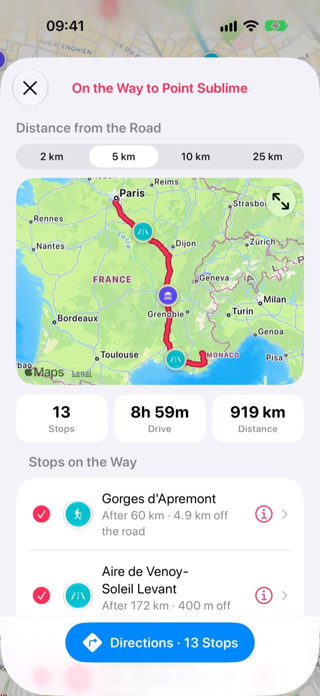

Comment retrouver vos lieux enregistrés le long d’un trajet
Les cartes vous y emmènent. Stops vous rappelle ce qu’il y a en chemin : le camping enregistré l’été dernier, le point de vue qui mérite une pause thé, la boulangerie près de la sortie d’autoroute. Choisissez votre destination et vos lieux enregistrés le long de la route apparaissent dans l’ordre où vous les atteindrez.
- Gratuit
- Quelques secondes
- iPhone et iPad
Ce qu’il vous faut
- L’accès à la position pour Stops, pour savoir d’où part le trajet.
Pas à pas
-
Ouvrez votre destination
Touchez une étape, Domicile, Travail ou n’importe quel lieu sur la carte pour ouvrir sa fiche. Puis touchez Étapes sur le trajet. Le bouton apparaît pour toute destination un peu éloignée de votre position.
-
Voyez ce qu’il y a le long de la route
Stops calcule le trajet et liste vos lieux enregistrés à proximité, du premier au dernier. Pour chacun, vous voyez à quel point du trajet il se trouve et à quelle distance de la route.
Touchez la carte pour l’afficher en grand.

-
Cherchez plus près ou plus loin
En haut de la page, sous Distance de la route, touchez la distance de recherche, de 2 à 25 km. La carte et la liste changent aussitôt, et Stops retient votre choix pour la prochaine fois.
-
Obtenez un itinéraire par les étapes de votre choix
Toutes les étapes sont cochées au départ. Touchez celles que vous préférez sauter, et touchez-les à nouveau pour les remettre. Le bouton Infos ouvre une étape.
Touchez Itinéraire et votre app de cartes s’ouvre avec un itinéraire passant par les étapes cochées, dans l’ordre du trajet, jusqu’à votre destination. Plans et Google Maps acceptent des étapes intermédiaires ; Google Maps en accepte jusqu’à neuf.
Bon à savoir
- Les lieux tout autour de votre point de départ sont exclus, pour qu’un long trajet au départ d’une ville ne commence pas par les étapes de la ville elle-même.
- L’itinéraire vient de Plans : une connexion est donc nécessaire.
Plus de guides
Obtenir Stops
Tous les lieux qui valent le détour, sur iPhone, iPad, Mac et Apple Watch.